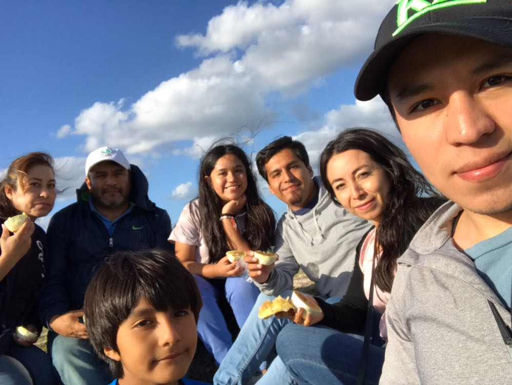

<!DOCTYPE hmtl>
<hmtl lang="es">
		<head>
			<meta charset="utf-8">
			<title>MI SITIO WEB</title>
			<link rel="stylesheet" type="text/css" href="css/main.css">
			<link href="https://fonts.googleapis.com/css2?family=Roboto+Mono:wght@200&display=swap" rel="stylesheet">
			<link rel="shorcut icon" href="img/Home/favicon2.png">
		</head>
		<body>
			<header id="main-header">
				<nav>
					
					<center><ul>
						<li><A href="index.html">Inicio</A></li>
						<li><A href="sobremi.html">Sobre mi</A></li>
						<li><A href="hobbies.html">Hobbies</A></li>
						<li><A href="galería.html">Galería</A></li>	
						<li><A href="recomendaciones.html">Recomendaciones</A></li>
						<li><A href="contacto.html">Contacto</A></li>
					</center></ul>
				</nav>
			</header>
	<center><h5>Galería</h5></center>
		<center><p class="galeriaaaa"> Esta sección es para compartir fotos mías, que son muy especiales, y tal vez a través de ellas me conozcas un poco más. </p></center>
	<section id="galeria">
<div class="figuree">
  <center> </center>
  <p>Esta soy yo a los 3 años, cuando vivía en Playa del Carmen e iba a ballet.</p>
</div>

<div class="figure">
  <center> </center>
  <p>Estos son mis abuelitos maternos, mi abuelito murió hace 3 años y siempre fue como un segundo pápa</p>
</div>
<div class="figureee">
  <center> </center>
  <p>En la graduación de primaria y secundaria, próximamente de preparatoria. </p>
</div>
<div class="figureeee">
  <center>  </center>
  <p>Esta es mi familia, mis dos hermanos, la esposa de mi hermano mayor, mi sobrino, mis papás y de lado derecho mis abuelitos paternos. </p>
</div>
<div class="figureeeee">
  <center> </center>
  <p>El segundo hijo de mi hermano nació hace un año, su nombre es Emilio, justo un día después nació mi perrita kibi. </p>
</div>
<div class="figureeeeee">
  <center>  </center>
  <p>En diciembre del 2018 y enero del 2019 estuve viviendo dos meses en España, visite Londres, Paris, y mis papás fueron de sopresa y fuimos a Venecia, Pisa y Florencia. </p>
</div>


<div id="footer">
			<footer>
				<tr>
					<th>
					<th> <a href="https://instagram.com/melilaaandon?igshid=ixugqjf1dplr" target="blank">Instagram: @melilaaandon </a> </th>   
					<div>       
					<footer>
						<th>
					<th><a href="https://www.facebook.com/melissa.landon.334" target="blank"> Facebook: Melissa Landon </a></th>
					</div> 
					</footer>
					<div>
					<footer>
						<center><th>¡Gracias por tu visita!</th></center>
					</footer>
					</div>
				</tr>
			</footer>
		
		</body>
		</html>